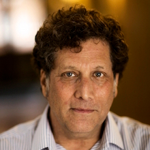

Shalom Lappin
Position:
Research Projects
The Probabilistic Representation of Linguistic Knowledge
ESRC Professorial Fellowship Research Project
October 1, 2012 - January 31, 2016
In this research project we are focussing on the problem of how to specify the class of representations that encode human knowledge of the syntax of natural languages. We are pursuing the hypothesis that a representation in this class is best expressed as an enriched statistical language model that assigns probability values to the sentences of a language. A central part of the enrichment of the model consists of a procedure for determining the acceptability (grammaticality) of a sentence as a graded value, relative to the properties of that sentence and the language of which it is a part. This procedure avoids the simple reduction of the grammaticality of a string to its probability of occurrence, while still characterizing grammaticality in probabilistic terms. An enriched model of this kind will provide a straightforward explanation for the fact that individual native speakers generally judge the well formedness of sentences along a continuum, rather than through the imposition of a sharp boundary between acceptable and unacceptable sentences. The pervasiveness of gradedness in the linguistic knowledge of individual speakers poses a serious problem for classical theories of syntax, which partition strings of words into the grammatical sentences of a language and ill formed strings of words.
This research holds out the prospect of important impact in two areas. First, it can shed light on the relationship between the representation and acquisition of linguistic knowledge on one hand, and learning and the encoding of knowledge in other cognitive domains. This work can, in turn, help to clarify the respective roles of biologically conditioned learning biases and data driven learning in human cognition.
Second, this work can contribute to the development of more effective language technology by providing insight, from a computational perspective, into the way in which humans represent the syntactic properties of sentences in their language. To the extent that natural language processing systems take account of this class of representations they will provide more efficient tools for parsing and interpreting text and speech.